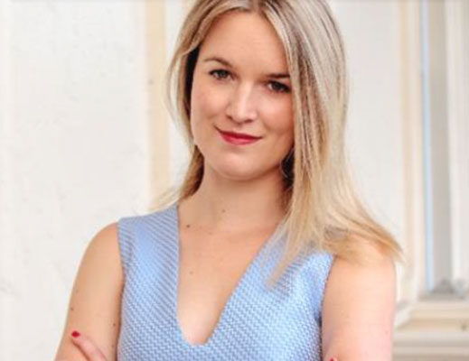

Founders
Laura Round holds the position of Director in the Office of the International President at Bank of America, overseeing a spectrum of responsibilities including communications, marketing, public policy, and ESG initiatives.

Laura Round
Dominic McVey An award-winning business leader and seasoned CEO, Dominic excels as a board director in executive and non-executive roles. His prominent leadership spans business, manufacturing, international diplomacy, and education.
Dominic McVey
Sofia Sancho Pascoal specialises in CSR, stakeholder management, project management, communications, and event planning, with a keen focus on responsible sourcing and the role of business in international development.